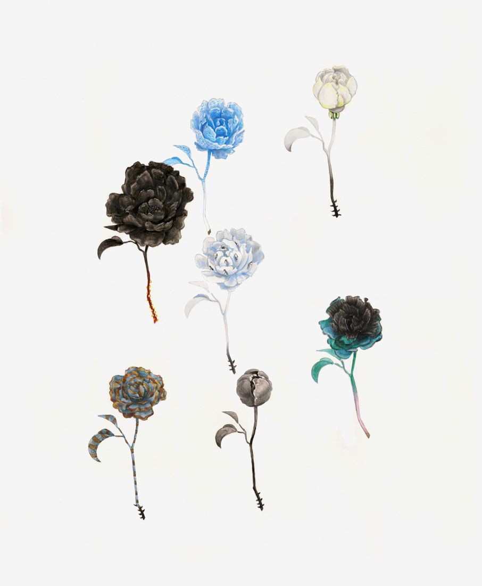
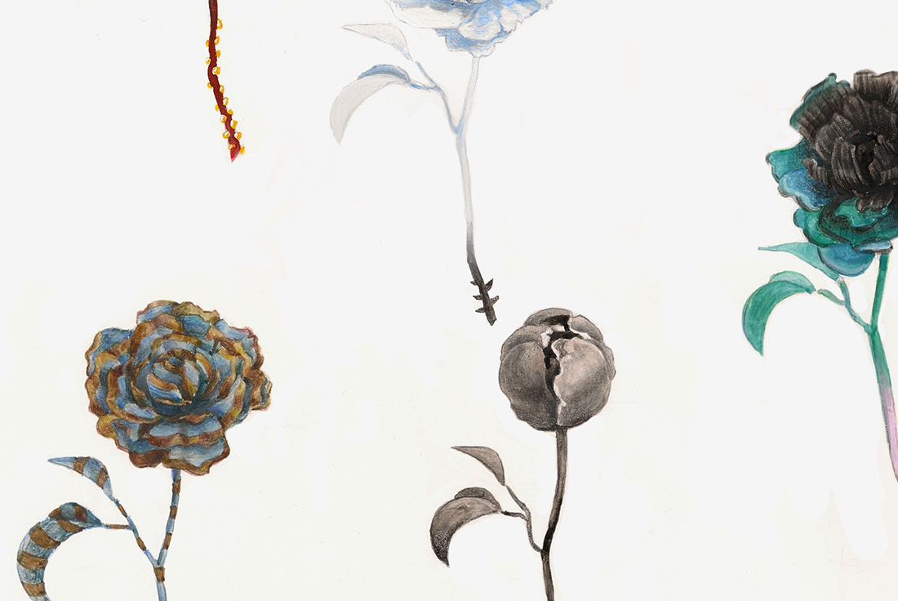

Chloe Scheffe
Design
,
illustration
, etc.
24/7
Illustration (gouache and colored pencil on bristol)
14 x 17"
2014
A map of one week. The bloom of the peonies was dictated by my mood; the clothes I wore produced their color, texture, and pattern.
Published in
Why the Beef Zine
7: Pattern
